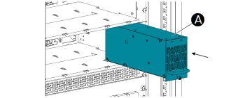

Insert Static Switch Module
- Make sure the module is oriented with the screw at the bottom.
-
Carefully insert the module (A) with both hands
in the empty slot to the very right in the bottom rack.
Note: Check that the sockets on the back plate are matched with the plugs on the module.
- Make sure that the module is fully inserted and that the module front is flush to the protective covers.
-
Tighten the
screw (B) at the bottom.